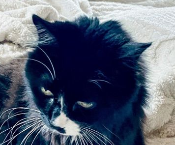

Thank you for using cat browser.
It was made by a 7 year old with gemini and that 7 year old is me typing this right now.
This is open source so you can base stuff off of it like new browsers but thank you for using cat browser it took a week.
Version 1
Right click for navigation
Click on the cat button to pick a website or go home
The cat here is sammy he is a black and white tuxedo cat he is very nice but also shy
